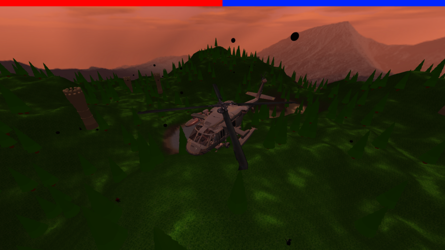
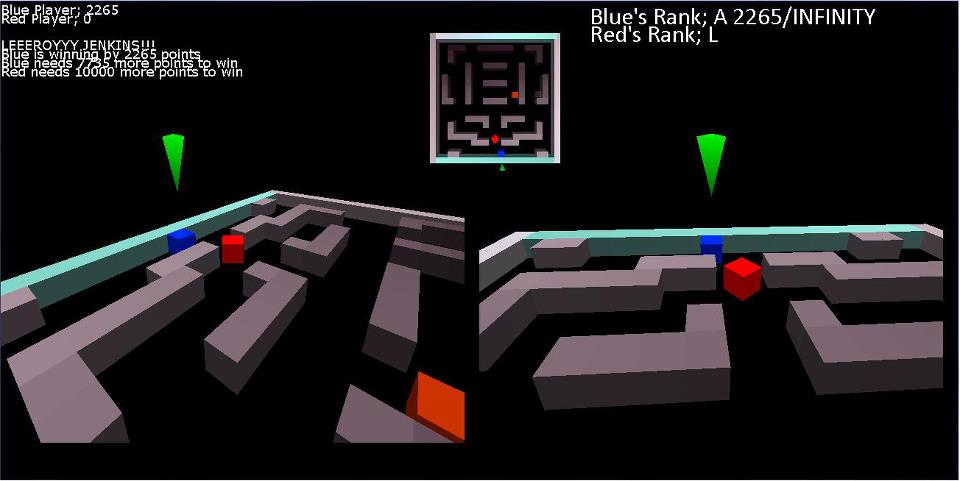
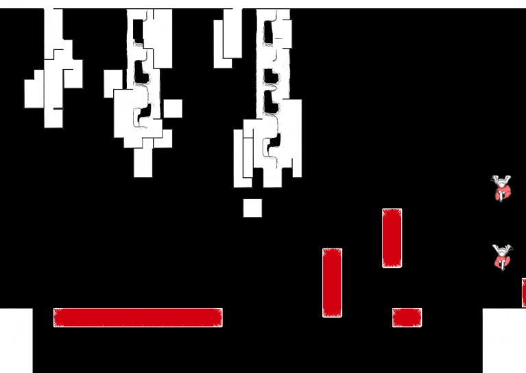

Experience
Scholarpro
December 2017 - Present
Full Stack Developer
- Created a MongoDB database to keep track of
Children's Hospital of Eastern Ontario
June 2017 - Present
Summer Research Student
- Worked with the Pathology lab to create procedurally generated 3D maps of the placenta
Graphics, Imaging, and Games Lab
May 2016 - August 2016
Dean’s Summer Research Internship Student
- Created a pebble mosaic filter for digital photos.
- The code was written in C++, and is used as a pipeline between a digital photo and a Carleton graduate student’s potential field thesis. First, the original photo would be segmented, then each region would be sent to the potential field code, making each region smoother, and look like a pebble. All of the new smoothed regions give an effect of a mosaic.
- Written in C++, made use of OpenCV to manage and process the images
Projects

Operation Skullrain
Fall 2017
C++, OpenGL- A helicopter shooter themed game built outside of an engine
- Worked on the game mechanics as well as integrating the models and their physics

Blox Heroes
2009 - 2015
Blitz 3D- Created a helicopter shooter themed game
- Worked on the game mechanics as well as integrating the models and their physics

_[Blank]
Jan 2016
Superpowers, Typescript- Created a helicopter shooter themed game
- Worked on the game mechanics as well as integrating the models and their physics